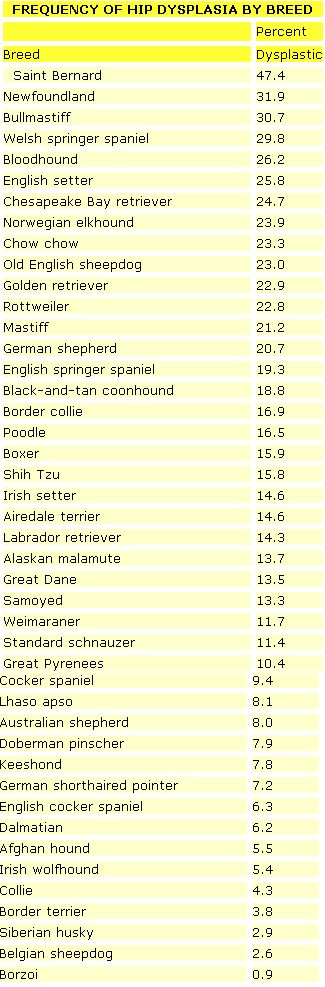
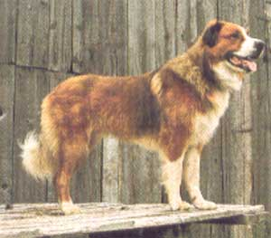

PET CONCERNS
I WATCH FROM THE WINDOW AS ONE of my favorite patients climbs out of the car. He's a huge German shepherd named Von Hunkermann. The Von is graying at the temples, and for all the years I've known him-despite the pain he's had-he's always been a pure wag-tailed, lick-your-face joy to be around.
Today, however, he struggles. The jump from the car to the ground is almost too much for his diseased hips to stand. There's a visible wince as he lands; a barely audible whimper escapes his lips. He tries to wag his tail, but the effort is too painful for even this stoic German to bear.
The Von is suffering from hip dysplasia, a disease he was born with and a pain that will only get worse as he ages. Hip dysplasia affects many of our dogs, but it can be especially prevalent in the larger breeds, such as the Saint Bernard, Newfoundland, bull-mastiff and rottweiler (see the accompanying sidebar).
Von Hunkermann's pain comes from a severe arthritis surrounding both hips. If I were to take an x-ray, I would see an intense bone formation around the hip joints and possibly some bone chips floating in the joint capsule itself. Every time the Von moves, his hips grind against the roughened edges of the excess bony growths. I can only imagine his suffering.
All these changes were brought on by hips that were too loose from birth. The dysplastic ball-and-socket hip joint-instead of fitting snugly and cleanly as a normal hip joint would-slipped and slid around like a size-nine foot in a size-12 shoe. As the Von's hips creaked and popped (in some severe cases you can actually hear the creaking as the dog walks), the bony growths were being deposited to compensate for the excess joint movement.
As I watch the Von, I wish there was more I could do for him-more his owners could afford. But there isn't. So we will do all we can for his pain and hope that the next puppy his owners choose is free from the disease. And I can help them with that selection process. You see, hip dysplasia is a genetic disease passed down to succeeding generations. If one has enough information to pick I the right parents, the pups they produce should be free of dysplasia.
The Orthopedic Foundation for Animals Based on 100 or more evaluations of each breed for hip dysplasia conducted by the Orthopedic Foundation for Animals (OFA) was formed in 1966 to help evaluate future canine parents for their potential to pass along the traits that eventually create hip dysplasia. OFA takes x-rays of dogs two years old or older to screen breeding stock. The x-rays show a clear indication of the presence or absence of hip dysplasia.
By selecting a puppy produced by animals judged free of dysplasia by OFA, you greatly reduce your chances of getting a pet that will develop the ailment. Now, this assurance-as you might guess-doesn't come cheap. Expect to spend more money for a dog whose bloodlines are certified free from dysplasia. The price, though, will be well repaid.
In addition to parental influence, there are other factors that seem to add to the potential for developing the disease. For example, not only is dysplasia more prevalent in the bigger breeds, but it crops up more often in the biggest individuals.
Apparently, the faster a dog grows and the more it weighs, the better are its chances of becoming dysplastic. So, the best choice in a litter is probably the somewhat smaller, but active and aggressive, pup-not the "lard-ball" whose idea of a big day is to stroll from the food dish into someone's arms for a round of serious cuddling. Also, you can help prevent dysplasia by simply limiting your pup's caloric intake a bit so that it's not at maximum during his growing months. Of course you don't want your dog to be a walking skeleton, so check with your vet for a good nutritional program that'll limit the pup's weight gain somewhat but still provide all the essential nutrients.
That active pup in the litter may have another advantage, too. There is a definite correlation between the amount of hip muscle mass and the incidence of hip dysplasia. The firmer and bigger the hip muscles, the less chance there is for dysplasia. When you're looking for a pup, select one with strong, robust hip and thigh muscles.
Also, although x-rays aren't conclusive until the dog is at least two years old, your vet may be able to give you a fair idea of a young dog's potential for dysplasia. There are a number of tests an experienced veterinarian can perform on pups four to 12 weeks of age that may help spot the individual dog that is definitely on its way to dysplasia. In one such test, the vet will anesthetize the dog and then manipulate its hind legs to detennine just how loose the hip joints are.
Besides genetics and physical structure, there are other factors that may (or may not, depending on which expert you listen to) contribute to the development of hip dysplasia. For example, hormonal activity may be involved. And nutrition or exercise may play a part. In one study, supplementing puppy diets with vitamin C was shown to play an important pan in helping to prevent dysplasia. Other experts advise a puppy exercise regimen in which you gently move the dog's hip joints several times a day.
Any of these factors may have an effect on the development of dysplasia, but at this point in time we can't really say for sure.
I do know that I can't overstress the importance of trying to avoid hip dysplasia. There is nothing sadder than seeing a once-regal creature reduced to a pitiful image of its former self, obviously withered by constant pain. And once the animal develops the disease, there is no simple cure.
At this late stage in the progression of Von Hunkermann's dysplasia, for example, about all I can offer him is a daily supply of painkillers. Aspirin has worked so far, but I know that eventually, as his pain becomes even more severe, no amount of medication will be enough.
Perhaps if we had caught the disease in an earlier stage we could have opted for a pectinotomy, a fairly simple operation in which one of the muscle tendons on the inside of the thigh is severed. The operation reduces the pain, but the progress of the disease-the bony, arthritic changes-continues.
Or maybe, earlier on, we could have performed a technical (and, you guessed it, expensive) operation in which the angle of the ball-and-socket joint itself is realigned. The procedure has been effective in some cases when performed early. But in Von Hunkermann's situation, the dysplastic changes have progressed much too far.
We have one final option for the Von-the ultimate solution. We could have his entire hip replaced with a prosthesis: a polyethylene socket glued into his hip, and a ball made of cobalt chromium alloy fused onto his femur (thigh bone). But we'd have to refer the Von to a veterinary specialist for this high-tech operation, and I know there's no reason to pursue the option farther. The expense of the procedure is simply out of the question for the Von's owners.
So, the Von is stuck with his pain, I'm stuck with prescribing painkillers, and the owners, perhaps, are stuck with a lifetime regret-the wish that they'd known enough to choose a pup less likely to develop the disease in the first place.
|
 PAULA WRIGHT/ANIMALS ANIMALS |
 |
|